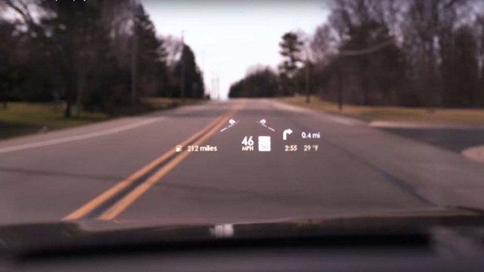

The Challenge
Modernising the driver experience meant digitising traditional analog screens and controls without increasing cognitive load or distraction, across mobile app, digital cluster, entertainment console and heads-up display.
The Approach
- Safety by design. Established a strict informational hierarchy based on driver cognitive load: critical alerts isolated to line-of-sight displays (HUD and cluster), complex interactions gated to console or mobile when stationary.
- Multi-platform system. Built one design system flexed across four hardware platforms and multiple brands (Mustang, Focus, Lincoln and F-150), spanning mobile, in-car iconography, HUD and digital cluster.
The Impact
- Unified HMI system. Broke down engineering silos to deliver one cohesive digital ecosystem across four hardware platforms.
- Reduced cognitive load. Testing validated a significant reduction in eyes-off-the-road time from the optimised HUD and cluster hierarchy.
- Future-proof framework. Created a scalable platform for translating analog telemetry into high-fidelity digital UI for next-gen vehicle launches.
